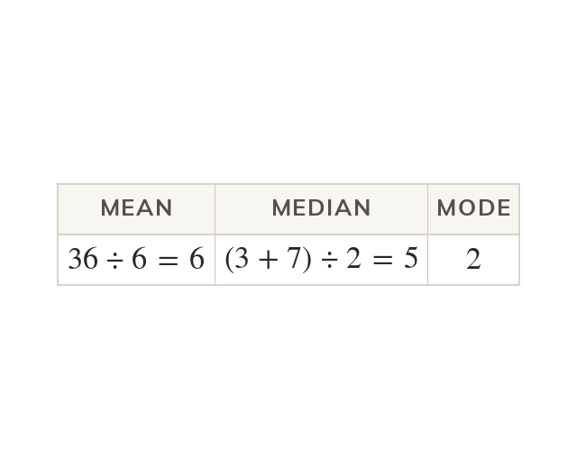

Three kinds of average
The mean shares the total equally. The median is the middle value, and the mode the most common. For and all three differ.
The mean shares the total equally, the median is the middle value, and the mode is the most common value. For and they give three different answers.